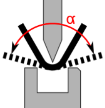

该对话框用于创建多步折弯过程 所需的一个或多个折弯的所有行动或程序被称为折弯过程。。预折弯 该折弯类型分两步进行折弯。首先通过初始折弯角度折弯，然后通过最终角度完成折弯。通过对复杂折弯零件的预折弯能够避免在折弯过程中发生碰撞。在实际折弯 折弯是指配置文件编程要素并且指定工件形状的变化。可以被分配给折弯的一系列属性：边长，折弯角度，折弯半径（可选），初始折弯角度（可选），额外的属性（可选）。折弯可包括若干折弯过程。之前进行，从而能够完成必须分两步或多步进行的折弯过程。
Attention! 折弯角度必须始终与最终折弯方向保持一致。
Tip: 通过对折弯零件的预折弯能够避免在折弯过程中发生碰撞。
- 在2D视图中突出显示要添加预折弯的折弯线 沿该线条进行折弯。。
- 使用角度选项指定预折弯的折弯角度。
- 按下插入按钮。
- 使用检查功能检查设定的折弯顺序 折弯顺序是指零件上所有边缘进行折弯的特殊顺序。一个折弯零件通常能够采用各种不同的折弯顺序被折弯。如果折弯工序被自动设置，软件将计算出理想的折弯顺序并且之后将其分配给折弯零件。是否会出现碰撞。
- 在2D视图中，选择带有要编辑的预折弯的折弯线。
- 使用角度选项校正预折弯的折弯角度。
- 按更改按钮以确认校正。
- 使用检查功能检查设定的折弯顺序是否会出现碰撞。
该选项用于定义预折弯的折弯角度(α) 。在稍后的阶段，将在第二步骤中完成具有最终折弯角度的最终折弯（A）。
Fig.: 预折弯和最终折弯的折弯角度

- 删除
- 更改
- 嵌入
通过该功能删除选定的预折弯。仅当预折弯已在折弯线上设置时才可使用该功能。
该功能为预折弯应用更改后的角度。
该功能用于在折弯线上创建预折弯。您可在折弯线上创建多个预折弯。